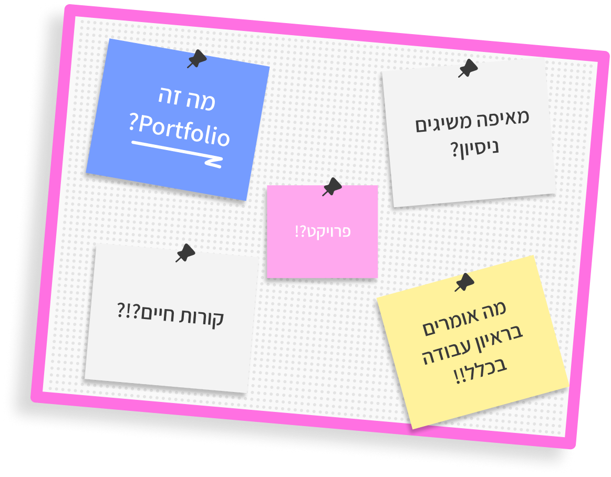

CallMaster
סימולציית תרגול שיחה לנציגי שירות בחברת ביטוח, הכוללת משוב חכם ומותאם אישית.

בחרו פרויקט, הרחיבו אותו וקבלו הצצה למבנה שכדאי להציג: תמונה, הסבר קצר, תהליך ותובנה מקצועית
סימולציות אינטראקטיביות המאפשרות תרגול מעשי של מיומנויות בסביבה בטוחה ומבוקרת.
סימולציית תרגול שיחה לנציגי שירות בחברת ביטוח, הכוללת משוב חכם ומותאם אישית.
סימולציית תרגול לקורס סקיפרים, בה ניתן לראות איך גורמים שונים משפיעים על השייט.
סימולציה שבה המשתמשים חווים את האתגרים שאדם בעל מוגבלות שכלית התפתחותית חווה.
ממשק תרגול אינטראקטיבי לשיפור האפקטיביות של אימון מיומנויות דיבור מול קהל.
הגעתם לשלב של ראיון העבודה, איזה כיף! ריכזנו שאלות נפוצות כדי שתוכלו לתרגל תשובות קצרות וברורות
השתמשו במודל הווה-עבר-עתיד: התחילו מההווה (סטודנט/ית בשנה ג' או בוגר/ת טל"מ), עברו לעבר (פרויקט מעשי בולט שפיתחתם, למשל סימולציה או לומדה, והכלים שרכשתם), וסיימו בעתיד (התשוקה שלכם להשתלב כמפתחי/מעצבי למידה בארגון הנוכחי).
הציגו את פרויקט הלימודים כפרויקט לכל דבר. תארו אותו במבנה STAR: הבעיה (Situation), האתגר הלימודי (Task), הפעולות שנקטתם לפיתוח והעיצוב (Action), והתוצאה או התובנה המקצועית שלמדתם מהתהליך (Result).
בצעו מחקר שוק מראש על טווחי השכר למשרות ג'וניור בטל"מ (למשל בעזרת מחשבון השכר שלנו). תנו טווח רחב (לדוגמה, 8,000 עד 10,000 ש"ח) וציינו שאתם גמישים ופתוחים לדיון בהתאם לתנאים הנלווים, לאפשרויות הלמידה ולפוטנציאל הצמיחה בתפקיד.
הישארו רגועים והסבירו שלפני שנוקבים במספר מדויק, חשוב לכם להבין טוב יותר את היקף האחריות, את מבנה הצוות ואת האתגרים בתפקיד. אם עדיין נדרש מספר, נקבו ברף העליון של הטווח שבניתם מראש, תוך הדגשה שאתם גמישים בהתאם להצעה הכוללת.
השתמשו בשיטת ה"סנדוויץ'": פתחו בחיוב (הערכה על ההצעה והאמון), הציגו את הסירוב המקצועי בצורה מנומקת (למשל, שאתם רוצים להתמקד בפיתוח למידה טכנולוגי ולא בפעילות אדמיניסטרטיבית), וסיימו בהצעת חלופה פרואקטיבית שבה תוכלו לתרום את מירב ערככם המקצועי.
שלחו מייל תודה קצר למגייסת: הודו לה על הזמן וההזדמנות, ציינו שנהניתם להכיר את החברה והצוות, ובקשו לקבל משוב קצר לשיפור. שמירה על יחסים מקצועיים פותחת דלתות רבות למשרות עתידיות באותו ארגון או דרך המלצות.
הכינו מראש רשימת שאלות חשובות על התרבות הארגונית, שגרת העבודה והגדרת ההצלחה בתפקיד. הראו עניין אמיתי והתלהבות, וזכרו שהראיון הוא דו-כיווני — גם אתם בוחנים האם מקום העבודה מתאים לכם.
קראו בעיון את החוזה וודאו שכל ההבנות בעל פה מופיעות בו: השכר הגלובלי, ימי החופשה, תנאים סוציאליים (פנסיה, קרן השתלמות, נסיעות), הגדרת שעות העבודה השבועיות ותקופת ההודעה מראש. אל תהססו לבקש יום או יומיים לקריאת החוזה בבית לפני החתימה.
הכנה טובה לראיון ובניית פרויקטים מרשימים הם הצעדים המשמעותיים ביותר לקבלת הצעת העבודה הראשונה שלכם בתחום טכנולוגיות הלמידה. תרגלו את התשובות, הציגו את היכולות שלכם בביטחון, וזכרו שהלמידה וההתפתחות שלכם הן הנכס הגדול ביותר שאתם מביאים לתפקיד.
בהצלחה!